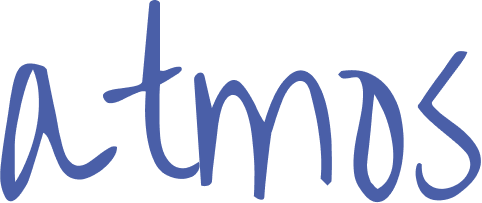
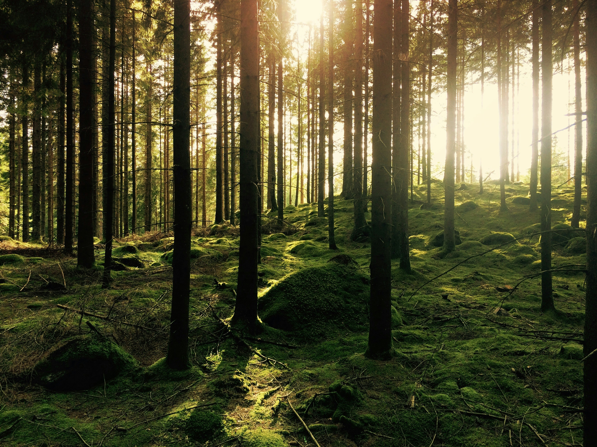
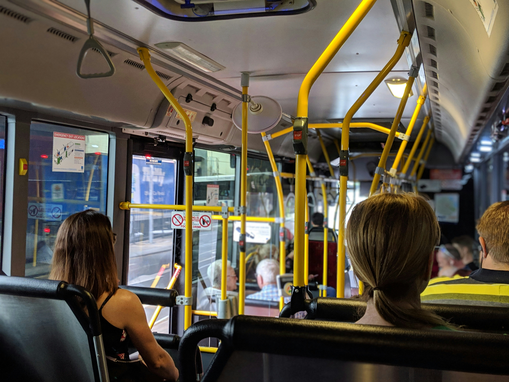

O que está acontecendo?
O planeta Terra enfrenta um aquecimento global acelerado e o aumento na frequência e intensidade de eventos climáticos extremos

Entenda o que está acontecendo com o planeta e como você pode ajudá-lo

O planeta Terra enfrenta um aquecimento global acelerado e o aumento na frequência e intensidade de eventos climáticos extremos
Ocorre principalmente pela intensa atividade humana, como a queima de combustíveis fósseis, o desmatamento e a agropecuária intensiva
Afetam diretamente a vida no planeta. Ondas de calor, chuvas intensas e secas afetam a saúde, a comida e as cidades.
Economizar energia em casa, economizar água, optar por caminhadas ou bicicleta, separar o lixo para reciclagem, etc.

A transição para fontes limpas, como a energia solar e a eólica, já está substituindo a dependência dos combustíveis fósseis na geração de eletricidade ao redor do mundo

O plantio de árvores em grande escala e a recuperação de florestas funcionam de forma comprovada para retirar e armazenar o gás carbônico da atmosfera

Dar preferência ao transporte público, caminhadas, uso de bicicletas ou veículos elétricos no dia a dia reduz diretamente a queima de combustíveis fósseis no trânsito urbano
Comece por algo simples
Hábito é repetição. Em sete dias o gesto já começa a parecer natural
Incentive um amigo ou familiar a seguir seu exemplo

Comece por um gesto hoje
Voltar ao topo